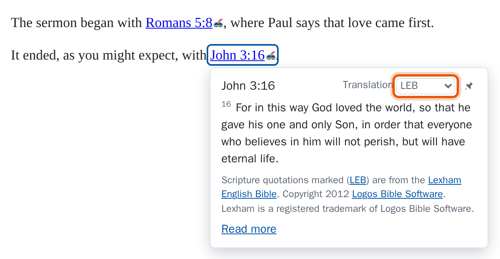
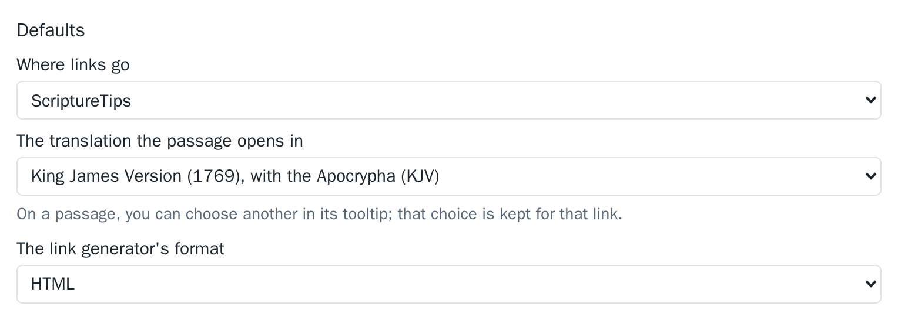

Choose from the Translation menu at the top of the tooltip. The passage changes at once, and Read more opens that translation.

Your choice is remembered for that link on that site, so it is the same the next time you visit. Every link is its own: if a page mentions John 3:16 twice, each can show a different translation, which is handy for comparing them.
Open the extension's settings (the toolbar button, then Settings) and choose under The translation the passage opens in. Passages you haven't chosen for open in it. Until you choose, that is the King James Version.

If the author wrote an abbreviation in brackets straight after the reference, as in “John 3:16 (LEB)”, the passage opens in that translation when ScriptureTips has it.